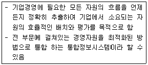
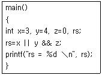
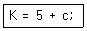
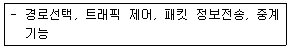

사무자동화산업기사 (2018-09-15 기출문제)
1과목: 사무자동화 시스템
1. 블록 암호화 알고리즘의 일종으로 대칭키 암호이며, 평문을 64비트로 나누어 56비트 암호키(Key)를 사용하는 것은?
- DES
- AES
- ARIA
- RC6
(정답률: 72%)

2. 1인 미디어, 1인 커뮤니티, 정보 공유 등을 포괄하는 개념으로 참가자 상호 간의 친구관계를 넓힐 것을 목적으로 개설된 커뮤니티형 서비스를 총칭하는 용어는?
- MHEG
- SMS
- SNS
- MHS
(정답률: 92%)
3. 다음 설명에 가장 부합하는 것은?

- ERP
- MIS
- EDI
- CRM
(정답률: 60%)
4. 다음 중 팩시밀리에서 사진, 문자, 그림 등을 정해진 방식으로 다수의 화소로 분해하는 과정은?
- 반사
- 변조
- 주사
- 동기
(정답률: 71%)
5. 분산처리 시스템이 지닌 장점과 가장 거리가 먼 것은?
- 신뢰성 증진
- 생산성 증대
- 비용의 저렴
- 시스템 설비 추가 불가
(정답률: 81%)
6. 데이터베이스의 구조에 대한 정의와 이에 대한 제약 조건 등을 기술한 것은?
- 도메인
- 스키마
- 카티션 프로덕트
- 엔티티
(정답률: 85%)
7. 다음 중 DASD방식의 저장장치가 아닌 것은?
- Floppy Disk
- CD-ROM
- Hard Disk
- Magnetic Tape
(정답률: 68%)
8. 윈도우즈 응용 프로그램에서 다양한 데이터베이스 관리 시스템(DBMS)에 접근하여 사용할 수 있도록 개발한 표준 개방형 응용 프로그램 인터페이스 규격은?
- SQL
- ACCESS
- API
- ODBC
(정답률: 60%)
9. 다음 중 사무자동화의 기대효과와 가장 거리가 먼 것은?
- 조직의 최적화
- 생산성의 개선
- 부수적기능(Shadow Function)의 증가
- 적시성(Timing)의 증가
(정답률: 76%)
10. 인터넷 망을 전용선처럼 사용할 수 있도록 특수 통신체계와 암호화 기법을 제공하는 서비스는?
- NAT
- IPSEC
- VPN
- VLAN
(정답률: 76%)
11. 다음 중 그룹웨어(Groupware)의 특징으로 가장 옳지 않은 것은?
- 통신망을 이용한다.
- 구성원들 간에 정보를 주고 받으면서 생산성을 높이는 데 주안점을 둔다.
- 정보를 공유하여 신속한 결정을 내릴 수 있도록 지원한다.
- 기업과 소비자 간의 판매 서비스 교환에 중점을 둔다.
(정답률: 85%)
12. 다음 중 전자 메일 서버 구축을 지원하는 서버 프로그램으로 마이크로소프트사가 개발한 것은?
- Apache Tomcat
- Exchange Server
- AQL Server
- Sendmail
(정답률: 63%)
13. 텔레텍스트(teletext)에 대한 설명으로 가장 옳은 것은?
- 전화망 또는 공중데이터통신망을 통해서 일반가정의 TV수신기를 정보센터의 컴퓨터와 결합하여 이용자의 요구에 대응하는 문자, 도형 등의 화상 정보로 TV화면상에 제공하는 서비스
- 텔레비전 방송의 전파 틈을 이용하여 뉴스나 일기예보, 흥행안내 등을 문자, 도형정보로 비쳐주는 방송시스템
- 기존의 텔렉스에 워드 프로세서 기능을 추가하여 문서의 편집, 저장 등의 처리 기능을 가진 단말기의 문서 통신 서비스
- 단문메세지 서비스라고도 한다.
(정답률: 64%)
14. 사무자동화 발전에 영향을 준 경제, 사회적 요인에 관한 설명 중 가장 옳지 않은 것은?(문제 오류로 가답안 발표시 3번으로 발표되었지만 확정 답안 발표시 전항 정답 처리되었습니다. 여기서는 3번을 누르면 정답 처리 됩니다.)
- 최대의 이익을 추구하기 위하여 정보의 최대 활용이 요구되는 경제 환경의 변화
- 생산부문의 합리화, 자동화에 부응하여 오피스에 대한 관심의 증가로 인한 기업의 구조적 변화
- 다품종 소량생산으로 변화되고 오피스의 처리능력도 소수정밀화가 요구되는 사회풍토의 변화
- 고학력화, 고령화로 인한 인구수, 연령분포, 교육년수의 변화
(정답률: 86%)
15. 인터넷에서 개인과 개인이 직접 연결되어 파일을 공유하는 것을 의미하는 것은?
- peer to person
- peer to peer
- person to peer
- person to person
(정답률: 74%)
16. 캐시(Cache)기억장치에 대한 설명으로 가장 옳지 않은 것은?
- 저용량 고속의 반도체 기억장치이다.
- 기억용량이 커질수록 액세스 시간이 짧아진다.
- CPU는 캐시에서 수행한 명령과 자료를 얻는다.
- 프로그램의 수행 시간을 단축하는 데 사용된다.
(정답률: 77%)
17. 다음 중 입력장치에 해당하지 않는 것은?
- Plotter
- Mouse
- Keyboard
- Scanner
(정답률: 77%)
18. 다음 중 일괄처리(Batch processing)에 가장 적합한 것은?
- 항공기 예약 업무
- 수도요금 계산업무
- 증권매매 업무
- 공장 자동제어 업무
(정답률: 82%)
19. 운영체제에 관한 설명 중 가장 옳지 않은 것은?
- 프로세서, 메모리, 입출력 장치 등의 하드웨어 자원을 관리한다.
- 컴퓨터(PC)나 스마트폰과 같은 하드웨어 장치와 사용자 사이의 인터페이스 역할을 한다.
- 응용 프로그램들은 운영체제가 제공하는 기능에 의존하여 시스템 자원에 접근한다.
- 응용 프로그램의 유지보수를 담당하기 때문에 응용 소프트웨어라고도 한다.
(정답률: 66%)
20. 데이터베이스(database)의 목적과 가장 거리가 먼 것은?
- 데이터의 무결성
- 데이터 중복의 최대화
- 데이터의 공유
- 데이터의 독립성
(정답률: 85%)
2과목: 사무경영관리 개론
21. 공고문서의 효력 발생 시기를 구체적으로 밝히지 않은 경우, 효력 발생 시기는?
- 문서가 접수된 때
- 문서가 발신된 때
- 고시 또는 공고 등이 있는 날부터
- 고시 또는 공고 등이 있는 날부터 5일이 경과한 때
(정답률: 66%)
22. 듀이 십진분류법(DDC)에 의한 분류 중 600에 해당하는 것은?
- 총서, 전집
- 철학
- 기술과학
- 사회과학
(정답률: 74%)
23. 사무 계획화의 효과에 대한 설명으로 가장 옳지 않은 것은?
- 사무원의 여유시간 단축
- 최소한의 노력으로 최대한의 효과 기대
- 사무자원의 적재적소 배치
- 정확한 소요예산의 결정
(정답률: 81%)
24. “사무는 경영의 정보를 행동으로 결합시키는 과정”이라고 정의한 자는?
- 레핑웰(Leffingwell)
- 리틀필드(Littlefield)
- 테리(Terry)
- 포레스터(Forrester)
(정답률: 54%)
25. 사무 간소화 단계에서 사무량 측정 대상으로 가장 옳지 않은 것은?
- 업무의 구성이 동일한 사무
- 사무량이 적은 잡다한 사무
- 일상적으로 일정한 처리 방법으로 반복되는 사무
- 내용적으로 처리 방법이 균일하여 변동이 별로 없는 사무
(정답률: 80%)
26. 산업안전보건기준에 관한 규칙상 용도별 조도 기준 중 틀린 것은?
- 초정밀 작업 : 750럭스 이상
- 정밀 작업 : 300럭스 이상
- 보통 작업 : 200럭스 이상
- 기타 작업 : 75럭스 이상
(정답률: 77%)
27. 행정 효율과 협업 촉진에 관한 규정에서 행정기관에서 공무상 작성하거나 시행하는 문서와 행정기관이 접수한 모든 문서는?
- 공문서
- 사문서
- 비밀문서
- 속기문서
(정답률: 89%)
28. 사무환경관리에서 사무실 배치 원칙에 대한 설명으로 옳지 않은 것은?
- 사무실 배치는 각 사무실의 실내 배치를 우선 고려하고 실, 국, 과 등의 단독 사무실과 일반사무실, 회의실 등을 배치한다.
- 건물 내의 모양, 기둥, 계단, 승강기, 식당, 화장실 등을 참고하면서 배치한다.
- 실, 국, 과의 편제와 수, 관리자의 직급 및 수와 조직인원 및 분장업무 등을 감안하여 배치한다.
- 업무의 내용과 서류의 접수, 전달, 보관 및 업무상 관련이 깊은 실, 국, 과의 상호 관계, 조직의 발전성을 고려하여 배치한다.
(정답률: 68%)
29. EDI에 관한 설명으로 틀린 것은?
- 사무실과 사무실 또는 거래처 간에 상호합의된 메시지를 컴퓨터를 통하여 상호 교환함으로써 거래업무에 따르는 문서처리 업무를 자동화하는 것을 의미한다.
- EDI의 데이터 형식, 용어, 규약 등의 국제적 표준을 정하는 기구는 OSI이다.
- 사무작업에서 종이로 이루어진 문서를 전자식으로 대체할 때 사용하는 데이터 교환 방식이다.
- 서로 다른 조직 간에 표준화된 양식을 사용하여 상업적 또는 행정상의 거래를 통신표준에 따라 컴퓨터 간에 교환하는 전자식 데이터 교환 시스템이다.
(정답률: 74%)
30. 사무자동화의 한 방법으로서 사무 진행의 통제를 전담하는 부서가 처리해야 할 서류를 정리, 보관하여 두었다가 처리해야 할 시기에 사무처리 담당자에게 전달해서 처리하도록 하는 제도를 무엇이라 하는가?
- 티클러 시스템(tickler system)
- 보고제도
- 간트도표(gantt chart)
- 자동독촉제도(come up system)
(정답률: 67%)
31. 다음 중 사무 표준화의 대상이 아닌 것은?
- 정책(policy)
- 재료(materials)
- 방법(methods)
- 보안(security)
(정답률: 62%)
32. 서식용지의 규격 중 A4용지의 크기는? (단, 가로×세로 크기이며 단위는 mm이다.)
- 210×297
- 182×257
- 257×364
- 1⑤×148
(정답률: 82%)
33. 다음 중 안소프(Ansoff)에 의한 기업의 의사결정에 포함되지 않은 것은?(오류 신고가 접수된 문제입니다. 반드시 정답과 해설을 확인하시기 바랍니다.)
- 경쟁적 의사결정
- 전략적 의사결정
- 관리적 의사결정
- 업무적 의사결정
(정답률: 58%)
34. 사무관리 표준화를 위한 문서의 구성요소에서 문서번호를 부여할 때 구성요소가 아닌 것은?
- 기관기호
- 분류번호
- 문서등록번호
- 접수번호
(정답률: 69%)
35. 사무량 측정 방법 중에서 무작위로 추출된 작업자나 기계에 대하여 임의의 시간 간격으로 관찰하여 시간 표준을 결정하는 방법은?
- 워크 샘플링법
- 표준시간 자료법
- 실적 기록법
- 주관적 판단법
(정답률: 71%)
36. 저작권의 발생 시점으로 옳은 것은?
- 저작물을 입법예고한 때부터
- 저작물을 공표한 때부터
- 저작물을 창작한 때부터
- 저작물을 등록한 때부터
(정답률: 66%)
37. 휴대용 무선기기를 이용하여 콘텐츠를 제공하고 상거래 영역까지 무선 인터넷을 사용하여 비즈니스 서비스를 제공하는 것은?
- M-Commerce
- Virtual Communities
- Collaboration Platforms
- Information Brokerage
(정답률: 77%)
38. 산업안전보건기준에 관한 규칙에 의거 “적정공기”의 최저 산소 농도는?
- 10퍼센트
- 15퍼센트
- 18퍼센트
- 25퍼센트
(정답률: 66%)
39. 서식 설계에 관한 일반 원칙으로 가장 옳지 않은 것은?
- 서식은 글씨의 크기, 항목 간의 간격 등을 균형 있게 조절하여야 한다.
- 서식에는 불필요하거나 활용도가 낮은 항목을 넣어서는 아니 된다.
- 서식에는 가능하면 행정기관의 로고 등을 표시한다.
- 서식은 특별한 사유가 없어도 별도의 기안문과 시행문을 작성한다.
(정답률: 82%)
40. 다음 중 EDI의 직접적인 구성요소와 가장 거리가 먼 것은?
- 표준화
- 통신 네트워크
- 운영체제
- 변환 소프트웨어
(정답률: 56%)
3과목: 프로그래밍 일반
41. C언어에서 강제적으로 데이터 형 변환을 하는 연산자는?
- auto 연산자
- case 연산자
- cast 연산자
- conversion 연산자
(정답률: 54%)
42. 고급 언어로 작성된 프로그램을 구문 분석하여 그 문장의 구조를 트리로 표현한 것으로 루트, 중간, 단말 노드로 구성되는 트리는?
- 구문 트리
- 파스 트리
- 어휘 트리
- 문법 트리
(정답률: 78%)
43. 다음 C언어를 수행할 때 산출되는 값은?

- 0
- 3
- 4
- 1
(정답률: 43%)
44. CPU를 점유하고 있는 프로세스를 교체하기 위해 이전 프로세스의 상태를 보관하고 새로 진입하는 프로세스의 상태를 적재하는 작업은?
- context switching
- scheduling
- argument
- throughput
(정답률: 56%)
45. 토큰들의 문법적 오류를 검사하고, 오류가 없으면 파스 트리를 생성하는 컴파일 단계는?
- 어휘 분석 단계
- 구문 분석 단계
- 중간코드 생성 단계
- 최적화 단계
(정답률: 64%)
46. 실행중인 프로세스가 일정 시간 동안에 자주 참조하는 페이지들의 집합을 의미하는 것은?
- LOCALITY
- WORKING SET
- SEGMENT
- MONITOR
(정답률: 77%)
47. 중위 표기의 수식 “A * (B-C)”를 전위 표기로 나타낸 것은?
- * A – B C
- A B C - *
- A * B C -
- A B – C *
(정답률: 71%)
48. Chomsky 문법 중 생성 규칙에 제한이 없는 문법은?
- Type 0
- Type 1
- Type 2
- Type 4
(정답률: 68%)
49. 운영체제의 기능으로 옳지 않은 것은?
- 자원의 효율적 관리
- 작업의 연속적 관리를 위한 스케줄 관리
- 여러 사용자 간의 자원 공유
- 원시 프로그램에 대한 기계어 번역
(정답률: 77%)
50. 럼바우의 객체지향 분석기법에서 정보모델링 이라고도 하며, 시스템에서 요구되는 객체를 찾아내어 속성과 연산 식별 및 객체들 간의 관계를 규정하여 객체다이어그램으로 표시하는 모델링은?
- 기능 모델링
- 정적 모델링
- 동적 모델링
- 객체 모델링
(정답률: 75%)
51. 재배치 형태의 기계어로 된 여러 개의 모듈을 묶어서 로드 모듈을 작성하는 것은?
- 로더(Loader)
- 어셈블러(Assembler)
- 프리프로세서(Preprocessor)
- 링키지 에디터(Linkage Editor)
(정답률: 66%)
52. C 언어에서 비트연산자가 아닌 것은?
- &
- !
- <<
- ~
(정답률: 52%)
53. 기억장치의 관리 전략 중 배치전략(Placement)에 해당하지 않는 것은?
- first fit
- best fit
- worst fit
- last fit
(정답률: 79%)
54. 객체지향 개념에서 이미 정의되어 있는 상위 클래스의 메소드를 비롯한 모든 속성을 하위 클래스가 물려받는 것을 무엇이라고 하는가?
- Abstraction
- Method
- Inheritance
- Message
(정답률: 82%)
55. 명시적 순서 제어에 해당되지 않는 것은?
- 해당 언어에서 각 문장이나 연산의 순서를 프로그래머가 직접 변경
- GOTO문이나 반복문을 사용해서 문장의 실행 순서를 변경
- 수식의 괄호를 사용해서 연산의 순서를 변경
- 수식에서 연산자 우선순위에 의한 수식 계산
(정답률: 62%)
56. 매개변수 전달방법 중 매개변수들의 주소를 대응되는 형식 매개변수들에게 보내어 기억장소를 공유시키는 전달 방식은?
- 값에 의한 전달
- 결과에 의한 전달
- 참조에 의한 전달
- 이름에 의한 전달
(정답률: 69%)
57. EBNF에서 선택적 구조를 나타내는 데 쓰이는 기호는?
- { }
- < >
- [ ]
- ：：=
(정답률: 72%)
58. 컴파일러에 의해 수행되는 자료 타입 강제 변환으로 혼합형 산술 계산시 시스템에 의해 자동으로 형 변환이 수행되는 타입 자동 변환을 무엇이라고 하는가?
- 명식적 형 변환
- 구조적 형 변환
- 수학적 형 변환
- 묵시적 형 변환
(정답률: 69%)
59. 다음 문장은 몇 개의 토큰으로 분리할 수 있는가?

- 3
- 4
- 5
- 6
(정답률: 77%)
60. 컴파일러 언어에서 다른 기종의 기계어로 번역하는 번역기는?
- linker
- cross-compiler
- debugger
- preprocessor
(정답률: 82%)
4과목: 정보통신 개론
61. Hamming distance가 9일 때 정정가능한 에러 개수는?
- 2
- 4
- 6
- 8
(정답률: 65%)
62. 이동통신망에서 발생하는 페이딩 중 고층건물, 철탑 등 인공구조물에 의하여 발생하는 페이딩은?
- Long term fading
- Short term fading
- Radio fading
- Mid term fading
(정답률: 57%)
63. OSI-7 Layer에서 다음 기능을 수행하는 계층은?

- 네트워크 계층
- 표현 계층
- 응용 계층
- 세션 계층
(정답률: 69%)
64. X.25에서 사용하는 레벨 2의 프로토콜은?
- SDLC
- LAP-B
- CSMA/CD
- BISYNC
(정답률: 52%)
65. 반송파의 진폭과 위상을 동시에 변조하는 방식은?
- AM
- FSK
- PSK
- QAM
(정답률: 80%)
66. 오류가 검출되면 자동적으로 송신 스테이션에게 재전송을 요청하는 ARQ기법의 형태가 아닌 것은?
- Stop-and-Wait ARQ
- Go-back-N ARQ
- Responsive-send ARQ
- Selective-Repeat ARQ
(정답률: 60%)
67. IPv6에 대한 설명으로 가장 적합하지 않은 것은?
- 전송방식으로 브로드캐스트, 유니캐스트, 멀티캐스트가 있다.
- 128비트의 길이를 갖는다.
- 패킷은 기본 헤더와 페이로드로 구성된다.
- IPv6 주소에서 0으로만 구성된 섹션은 0을 모두 생략하고 두 개의 콜론으로 대체할 수 있으며, 주소당 한번만 허용된다.
(정답률: 54%)
68. 시간폭과 진폭이 일정한 펄스의 위치를 입력신호에 따라 변화시키는 변조방식은?
- PDM
- PSM
- PAM
- PPM
(정답률: 53%)
69. 회선교환방식에 대한 설명으로 틀린 것은?
- 대역폭 설정이 융통적이고 통신회선을 가장 효율적으로 이용할 수 있는 교환방식이다.
- 데이터량이 많을 때와 파일 전송과 같이 긴 메시지 전송에 적합하다.
- PSTN이 회선교환방식에 해당된다.
- 전용 전송로를 제공해 주는 교환방식이다.
(정답률: 42%)
70. 16진 QAM의 대역폭 효율은?
- 3 bps/Hz
- 4 bps/Hz
- 5 bps/Hz
- 6 bps/Hz
(정답률: 79%)
71. 데이터를 양쪽 방향으로 모두 전송할 수 있으나 동시에 양쪽 방향에서 전송할 수 없는 통신 방식은?
- 단방향통신(simplex)
- 반이중통신(half-duplex)
- 이중통신(duplex)
- 역방향통신(reverse)
(정답률: 84%)
72. ITU-T 권고안 시리즈 중 공중 데이터 통신망에 관한 사항을 규정한 것은?
- I 시리즈
- Q 시리즈
- V 시리즈
- X 시리즈
(정답률: 74%)
73. 두 개의 채널사이에 보호대역(guard band)을 사용하여 인접한 채널 간의 간섭을 막는 다중화 방식은?
- 시분할 다중화방식
- 주파수분할 다중화방식
- 코드분할 다중화방식
- 공간분할 다중화방식
(정답률: 59%)
74. 불균형적인 멀티 포인트 링크 구성에서 회선제어 방식 중 주 스테이션에서 각 부 스테이션에게 데이터 전송을 요청하는 방식은?
- 실렉션 방식
- 대화모드 방식
- 폴링 방식
- 회선쟁탈 방식
(정답률: 69%)
75. 데이터 전송에서 오류 검출 기법에 해당하지 않는 것은?
- Parity Check
- Packet Check
- Block Sum Check
- Cyclic Redundancy Check
(정답률: 56%)
76. 프로토콜의 기본적인 요소가 아닌 것은?
- 처리(Process)
- 구문(Syntax)
- 의미(Semantics)
- 순서(Timing)
(정답률: 60%)
77. OSI 7계층에서 기계적, 전기적, 기능적, 절차적 특성을 갖는 구조화 되지 않은 비트 스트림을 전송하는 계층은?
- 물리 계층
- 세션 계층
- 응용 계층
- 네트워크 계층
(정답률: 72%)
78. 비패킷형 단말이 패킷교환망을 이용할 수 있도록 패킷의 조립과 분해 기능을 제공해 주는 것은?
- Frame bursting
- Terminal
- PAD
- hop
(정답률: 67%)
79. 연속된 8개의 0 문자열의 동기화 문제를 해결하기 위해 0 문자열 속에 위반(violation)이라는 신호 변화를 강제로 주는 부호화 기법은?
- NRZ-I
- B8ZS
- NRZ-L
- MANCHESTER
(정답률: 61%)
80. LAN에서 데이터의 충돌을 막기 위해 송신 데이터가 없을 때에만 데이터를 송신하고, 다른 장비가 송신중일 때에는 송신을 중단하며 일정시간 간격을 두고 대기 하였다가 다시 송신하는 방식은?
- TOKEN BUS
- TOKEN RING
- CSMA/CD
- CDMA
(정답률: 64%)